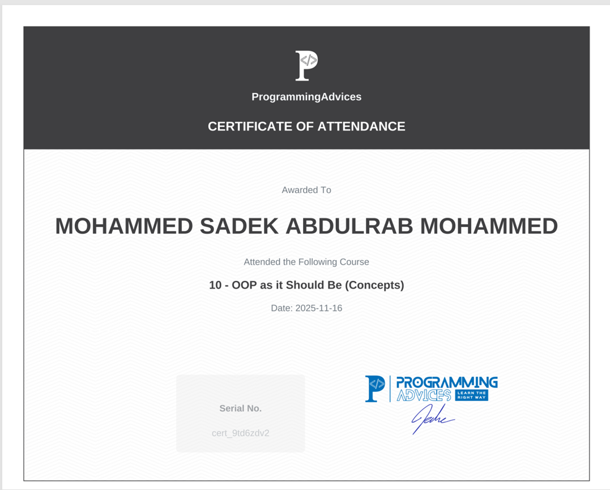

أبني على أساس برمجي واضح
لا أتعامل مع البرمجة ككتابة أوامر فقط؛ أحاول فهم الفكرة، تقسيمها، ثم تطبيقها بأسلوب منظم يعتمد على OOP والبرمجة المهيكلة.
Junior Full Stack Developer / C# .NET / Web / Flutter
أنا مطور Junior أركز على بناء أنظمة عملية تجمع بين الواجهات، الباك إند، وقواعد البيانات. عملت على مشاريع باستخدام Flutter وDart وPHP وMySQL وC# وSQL Server وتقنيات الويب وC++. أعتمد على OOP والبرمجة المهيكلة، وأهتم بأن يكون الكود منظمًا والنتيجة قابلة للعرض والفحص.
Hiring Fit
لا أتعامل مع البرمجة ككتابة أوامر فقط؛ أحاول فهم الفكرة، تقسيمها، ثم تطبيقها بأسلوب منظم يعتمد على OOP والبرمجة المهيكلة.
أهتم بأن يكون عملي قابلًا للعرض والفحص، سواء كان تطبيق Flutter أو موقع ويب أو نظام PHP، مع تنظيم الملفات وتحسين تجربة المستخدم قدر الإمكان.
عندما أواجه أداة أو مشكلة جديدة أبحث، أجرب، وأحسن النتيجة خطوة بعد خطوة حتى أصل إلى حل واضح يمكن مشاركته أو عرضه مباشرة.
Recruiter Snapshot
Projects
Technical Stack
كتبت هذه المهارات بشكل مباشر حتى يعرف مسؤول التوظيف المجالات التي أعمل عليها وما الذي أستطيع تطويره.
Backend Strength
أهتم ببناء منطق واضح، قواعد بيانات منظمة، وربط الواجهات بعمليات يمكن فهمها وفحصها وتطويرها.
أستخدم فهمي لـ OOP وتنظيم الكود لبناء طبقات واضحة وكائنات مفهومة بدل وضع كل المنطق في مكان واحد.
عملت مع MySQL وSQL Server، وأهتم بالعلاقات، الاستعلامات، الحسابات المالية، والتقارير.
في نظام تاجر استخدمت فكرة sync_queue لحفظ العمليات محليًا ثم رفعها عند توفر الاتصال.
أعمل على صفحات PHP لإدارة العملاء والفواتير والمدفوعات والتقارير مع اتصال واضح بقاعدة البيانات.
Certificates
أضيف هنا الشهادات التي تثبت عملي على الخوارزميات، حل المشكلات، C، ومفاهيم OOP.

شهادة في مفاهيم البرمجة الكائنية وطريقة التفكير بالكائنات.
فتح الشهادةتدريب متقدم على التفكير الخوارزمي وتحليل المشكلات.
فتح الشهادةأساس قوي في البرمجة باستخدام لغة C.
فتح الشهادةتدريب عملي على خطوات حل المشكلات قبل كتابة الكود.
فتح الشهادةExperience
أهتم بتنظيم الواجهات، إدارة الحالة، ربط البيانات، وتجهيز التطبيق ليكون قابلًا للتطوير.
أستخدم HTML وCSS وJavaScript لبناء صفحات حديثة تهتم بالتجربة، الأداء، وسهولة الاستخدام.
أعمل على فهم النماذج، قواعد البيانات، والاستعلامات، وربطها بواجهات المستخدم بشكل منظم.
أعتمد على مبادئ البرمجة الكائنية والبرمجة المهيكلة حتى تكون الحلول أوضح وأسهل في الصيانة.
Contact